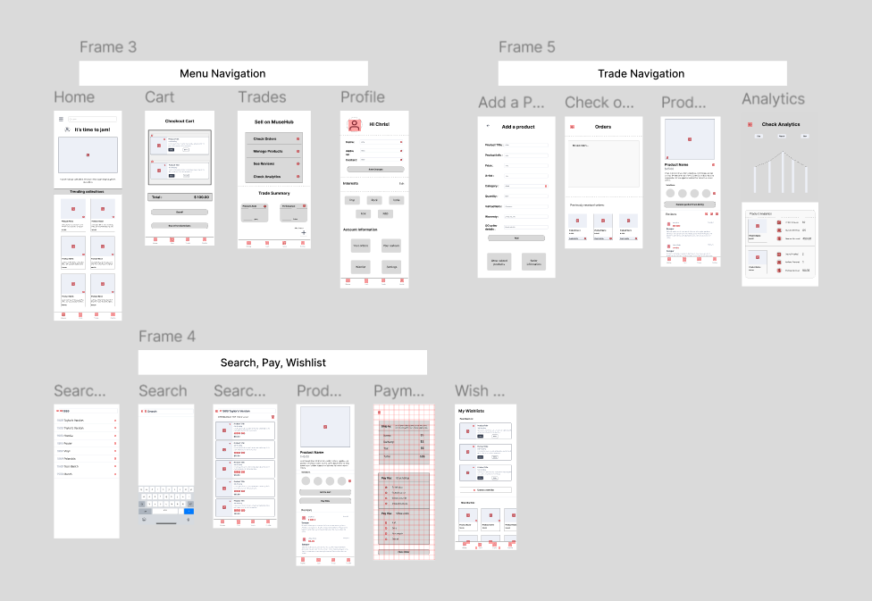
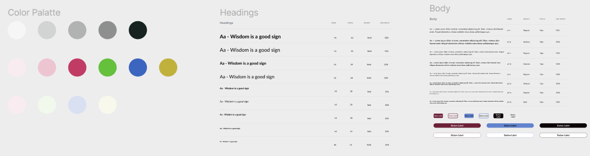
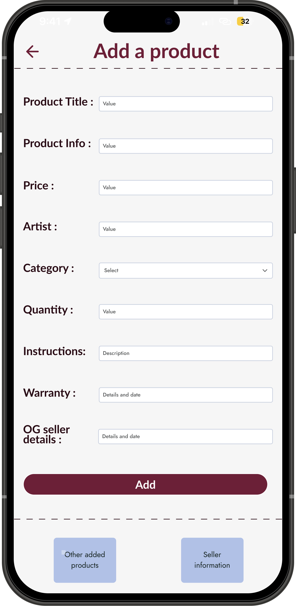
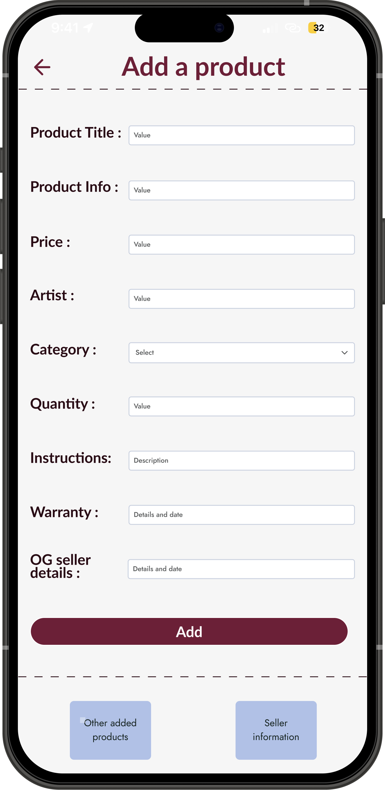

Timeline
4 weeks
My role
UX/UI Designer
Tools Used
Figma
Project Type
Conceptual, Self-Initiated
I conceived the idea of MuseHub, an e-commerce platform specializing in music collectibles as my inaugural project while building my portfolio. Motivated by my fascination with music and its cultural significance, I aimed to craft an aesthetically appealing application that enhances the shopping experience for users. This endeavor involved thorough ideation, wireframing, and prototyping from scratch, providing me with valuable insights into the foundational aspects of UX/UI design.
4 weeks
UX/UI Designer
Figma
Conceptual, Self-Initiated
There is a lack of a dedicated platform for music collectors to buy, trade, and manage their collections of music merchandise. Existing platforms are either too generalized or fail to provide a tailored experience for music enthusiasts.
MuseHub provides an aesthetically appealing platform for music collectors to buy, sell, and trade music merchandise, offering features such as advanced search, personalized recommendations, wishlists, and trading analytics.


Before creating wireframes, I sketched out ideas and layouts within figma. This phase let me test a number of ideas at once and also decide on the final outline of the text.

Created low-fidelity wireframes for the main screens: Home, Search, Product Page, Wishlist, Cart, Profile, and Trade sections.
Mapped out key user flows, including signing up, searching for products and trading items.


Developed interactive low-fidelity prototypes to test the user flow and gather initial feedback.

Color Palette: I used primary colors #c03c65, #65c03c, and #3c65c0 and expanded the range by utilizing their tints and shades.
Typography: I chose 'Lato' for headings and 'Jost' for body and label fonts.
Button Variations: I created different variations of buttons, including small, large, with and without borders.
During the project, I introduced several new concepts to enhance the overall functionality and user experience of MuseHub:
1. Trading: Allowing users to trade music collectibles with each other. New screens were introduced for adding a product, checking reviews, and removing items from the listing.
 


2. Analytics: Providing users with insights into their collections, including items sold, revenue gained, and reviews received.
3. Picking Interests:Enabling users to select their music preferences for a more personalized experience.


- Created high-fidelity mockups incorporating branding, color schemes, and typography.
- Developed interactive high-fidelity prototypes to demonstrate the final user experience.

- Conducted usability tests with potential users to identify pain points and areas for improvement.
- Gathered feedback and made necessary adjustments to the design.
- Based on usability testing feedback, iterated on the design to improve usability and visual appeal.
- Key iterations included enhancing the search functionality, improving the wishlist interface, and refining the trade feature.
Despite being a conceptual project, MuseHub has the potential to fill a significant market gap by offering a dedicated platform for music enthusiasts to discover, explore, and purchase music collectibles. With personalized recommendations, community-building features, and a seamless shopping experience, MuseHub can enhance user satisfaction and engagement. Its diverse product range can cater to various tastes, expanding its market reach.
Working on MuseHub provided me with invaluable insights into the UX/UI design process. I gained practical experience in ideation, wireframing, and prototyping, helping me understand the foundational aspects of user-centric design. This project honed my ability to empathize with users and create an aesthetically appealing, functional application. Through this process, I realized the importance of user research and feedback in shaping a successful product.